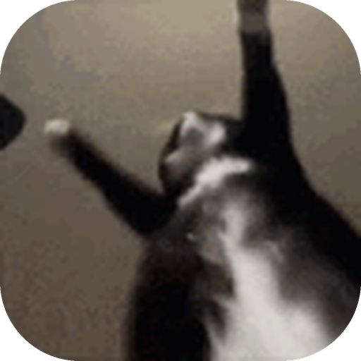
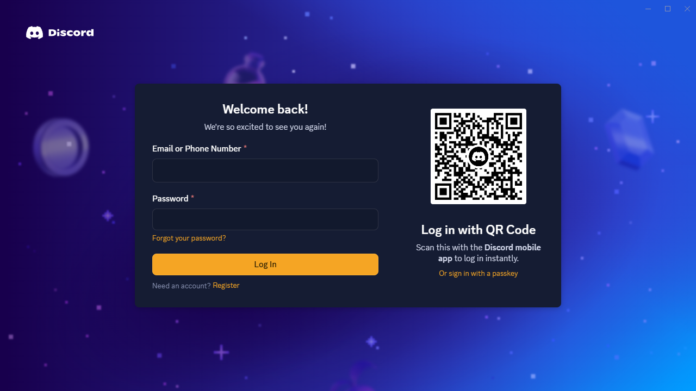
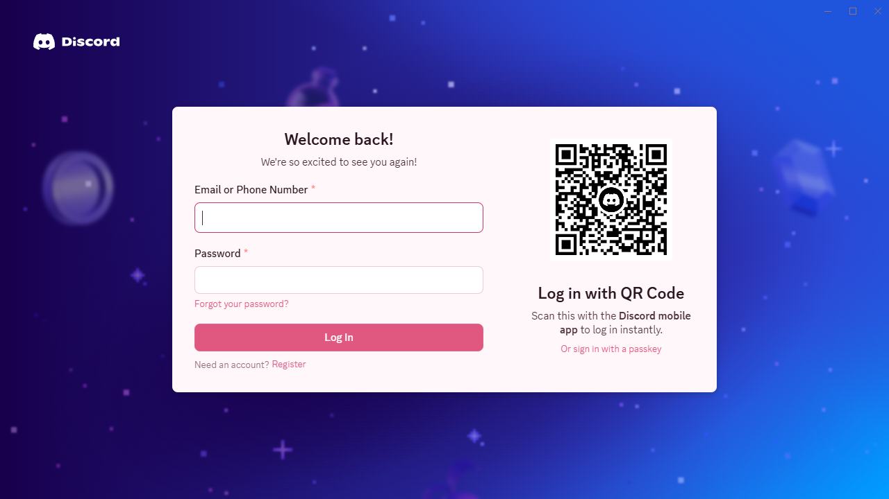

Bazinga
A Discord desktop client with Equicord built in. No patching Discord, 63 extra plugins and 16 themes.
Works on Windows, macOS and Linux. Builds are not code-signed yet, so Windows and macOS show a warning the first time you open them. Client mods are against Discord's Terms of Service; use them at your own risk.


Plugins (63)
Search the Plugins page in the app for "bazinga" to see them all.
- AccountAgeBadgeMarks accounts created recently, a common sign of spam and scam accounts.
- AttachmentScanner on by defaultWarns under messages with attachments that can run code on your computer or hide their real file type.
- AutoReloadReloads Discord by itself a few seconds after you turn on or off a plugin that needs it, instead of asking you to.
- BetterDiscordThemes on by defaultBrowse, preview and install every theme from the BetterDiscord theme store.
- BirthdayRemindersKeep a list of birthdays you enter yourself and get a reminder before and on the day. It only reminds you; it never sends anything.
- BlockLogShows the tracking and crash-report requests that Bazinga blocked, so you can see it working.
- BookmarkTagsRight-click a message to bookmark it with tags, then search and filter your bookmarks and export them as Markdown.
- CalendarEventsRight-click a server to save its scheduled events as a calendar file (.ics) you can open in any calendar app.
- CensorHides words and phrases you choose in messages, on your screen only.
- ChannelGalleryA grid of all the pictures and videos in a channel, from the messages you have loaded. No extra requests are made to find them.
- ChannelNotesKeep private notes for any channel or DM. Adds a notes button to the channel toolbar.
- ChannelStatsShows who is most active in a channel and when, from the messages you have loaded. Nothing is sent anywhere.
- CollapseLongCollapses very long messages. Click a collapsed message to expand it.
- ColorBlindModesAdjusts all colors in Discord for red-weak, green-weak and blue-weak vision, or shows you how they look to someone who has it.
- ColorLabelsRight-click a server or channel and give it a color: a dot on the server icon, or colored text for a channel. Only you see it.
- CopyAsMarkdownRight-click a message to copy it as a Markdown quote with the author and a link back.
- CsvTablePreviewShows ```csv code blocks and .csv attachments as tables.
- DraftCenterLists every message you started typing but did not send, in any channel, so you can finish or discard it.
- EmojiUsageStatsCounts the emoji in the messages you send and shows your favorites. The counts stay on this computer.
- ExifStripWarning on by defaultWarns before you upload a photo that contains your GPS location, and can remove the location without changing the image.
- FocusSessionsA focus timer for working or studying: it holds back notifications and hides other servers until it ends.
- GifFrameViewerRight-click a GIF to step through it one frame at a time and save any single frame as a picture.
- HighContrastFocusDraws a clear outline around whatever has the keyboard focus, so you can always see where you are when using Tab.
- HighlightWordsHighlights words you care about, such as your name or a topic, in every message. Only changes how it looks on your screen.
- ImageColorPickerRight-click a picture and choose Pick a color to read the exact color of any spot and copy its code.
- ImageCompareRight-click two pictures, one after the other, to see them on top of each other with a slider, like before and after.
- ImpersonationAlertWarns when someone's name looks almost the same as one of your friends' names, a common scam trick.
- InviteInspectorRight-click a server invite to see how old the server is, who made the invite and how many people are in it, before you join.
- JsonPrettifyShows ```json code blocks as a collapsible tree you can explore.
- LinkGuard on by defaultWarns before you open links that imitate other sites, hide their real address or use raw IP addresses. Works offline.
- LiveRegionMessagesMakes screen readers read out new messages in the channel you are looking at, as they arrive.
- LowEndModeRemoves blur, shadows and animations to make Discord lighter on slow computers and laptops on battery.
- MarkdownCheatsheetA quick reference for Discord's text formatting, one click away in the title bar.
- MassMentionShieldHides messages that mention many people or @everyone behind a click, so spam does not fill your screen.
- MathRenderShows LaTeX math written between $$ … $$ as formatted equations under the message.
- MermaidRenderDraws ```mermaid code blocks (flowcharts, sequence diagrams, charts) as diagrams under the message.
- MessageTodosA to-do list you can add messages to with a right-click. Tasks stay on this computer.
- PerfOverlayShows frame rate, memory use, page size and blocking tasks in a small overlay.
- PinSearchAdds a button to search a channel's pinned messages by text, author or file name.
- QRCodeReaderRight-click an image and choose Scan QR code to read it, with a warning if the link looks like a scam.
- QuietHoursSilences desktop notifications and notification sounds during the hours you choose, without changing your status.
- ReadabilityMake messages easier to read: pick a reading font, text size, line spacing, letter spacing and line length.
- ReadAloudRight-click a message to have it read out loud by your computer's own voice. Nothing leaves your computer.
- ReadingTimeShows an estimated reading time next to long messages.
- RecentChannelsA title-bar menu with the channels you visited last, so you can jump back with one click.
- RegexTesterAdds a box under ```regex code blocks where you can try the pattern on your own text. Patterns run in a separate thread that is stopped if it takes too long.
- RemindersRight-click a message and choose Remind me to get a notification about it later. Reminders stay on this computer.
- ReplyChainViewerRight-click a reply and choose View reply chain to see the whole conversation it answers in one place.
- ScratchPadA notepad you can open from anywhere in Discord. Saved automatically and kept on this computer.
- ScreenshotModeBlurs names, profile pictures and optionally messages with one shortcut, so you can share screenshots safely.
- ScriptBadgeTags messages written in a writing system you do not read, such as Cyrillic or Arabic, so you know why you cannot read them.
- SecretLeakGuard on by defaultAsks before you send a message that looks like it contains a password, API key, token or card number. Checks only your own outgoing text, on this computer.
- ShortenerExpanderRight-click a short link (bit.ly and similar) to see where it really leads before you open it. Only asks for the link's headers; no page is loaded.
- SnippetLibrarySave pieces of text you often write and put them in the message box with one click. It never sends anything for you.
- SpamCollapseFolds a message into one faded line when the same person sends the exact same text again right after.
- SvgPreviewShows SVG attachments as pictures in the chat, which Discord does not do. They are shown as plain images, so they cannot run anything.
- ThemeSchedulerSwitch themes by the time of day, by your system's light or dark setting, or give each server its own theme.
- ThemeStudioMake your own theme by picking colors with a live preview, and change the accent color of the orgeco themes in one place.
- UploadShrinkWhen a picture is over your upload limit, offers to make it smaller so it can be sent. It stays within the limit; it never goes around it.
- UsageStatsShows how much time you spend in each server, counted on this computer while Discord is in front.
- WorkspaceProfilesGroup your servers into workspaces like Work or Gaming and switch between them to see only the servers you need.
- WorldClockA title-bar clock showing the time in the time zones you choose.
- ZalgoFilterTones down 'glitchy' text where dozens of accents are stacked on top of letters and spill over other messages.
Themes by orgeco (16)
- Bazinga MidnightDeep navy with warm amber accents. The signature Bazinga look.
- Orgeco NeonDark violet with electric cyan, for late-night sessions.
- Orgeco MochaCozy coffee browns with soft peach highlights.
- Orgeco ForestDeep pine greens with fresh mint accents.
- Orgeco OceanCalm deep-sea blues with bright teal accents.
- Orgeco SakuraA light theme of cherry-blossom pinks and cream.
- Orgeco AMOLEDPure black for OLED screens, with crisp white text and a subtle red accent.
- Orgeco SunsetDusky plum with glowing orange, like the last light of the day.
- Orgeco CrimsonNear-black with bold crimson accents.
- Orgeco GoldBlack and gold, for a premium look.
- Orgeco ArcticA light theme of icy blues and clean whites.
- Orgeco LavenderA soft light theme in lavender and lilac.
- Orgeco HalloweenSpooky purples with a pumpkin-orange glow.
- Orgeco WinterFrosty midnight blues with icy highlights.
- Orgeco SpringA fresh light theme of new-leaf greens.
- Orgeco SummerA warm light theme of sunshine and cream.